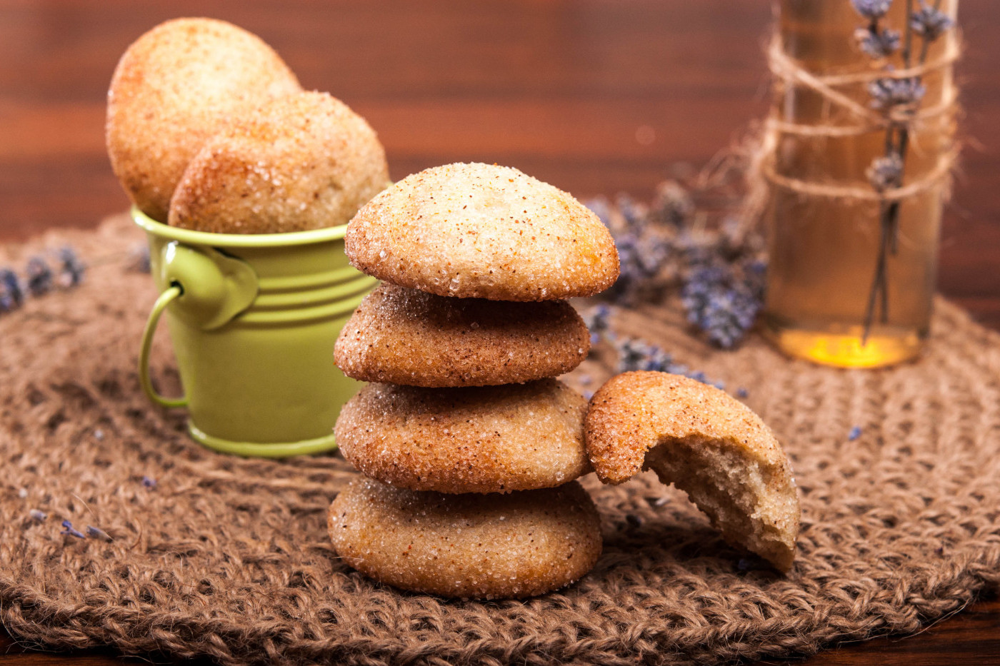

Почти като курабийките на баба, но още по-вкусни и ароматни! Точно такива са банановите курабийки. Лесни за приготвяне, банановите курабийки са идея с какво да допълним списъка с рецепти за лесни домашни сладки, които ще се харесат на всички вкъщи - от най-малките до най-големите. Може да ги комбинирате с чаша кисело мляко за закуска, или пък да ги сервираме с кафето следобяд. Тъй като банановите курабийки се приготвят без яйца и мляко, рецептата се превръща в прекрасна веган рецепта за сладки с банан.
📖
Лесна
⏱️
60 мин.
🍴
10